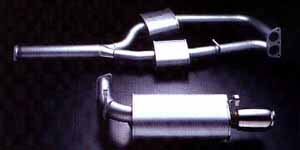

HKS Exhaust Systems

HKS Exhaust Systems features straight-through muffler design consisting of perforated tube surrounded by nickel-mesh or stainless steel wool, as well as fiberglass sound absorbing material for the least amount of back pressure possible. HKS Exhaust Systems are constructed from Aluminized or Stainless Steel for excellent corrosion resistance. It also comes with polished steel tips.
GReddy Exhaust Systems
The SP Exhaust Systems are designed to provide maximum power increase by coupling the optimum size of mandrelbent tubing to straight through silencers which offer the maximum amount of flow possible. Turbocharged engines will benefit from near linear boost build-up, while normally-aspirated engines will produce a clear, sporty sound. Available in either Stainless Steel or Aluminized material.